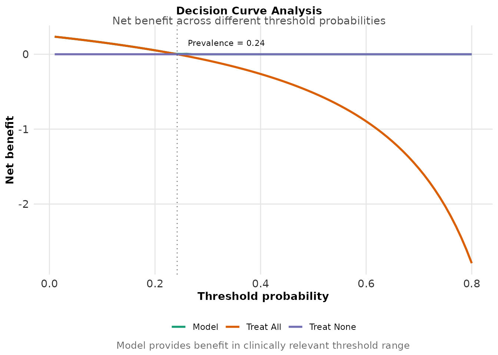

Decision Curve Analysis: Clinical Utility
decision-curves.Rmd
library(langAssessR)
library(ggplot2)
library(dplyr)
#>
#> Attaching package: 'dplyr'
#> The following objects are masked from 'package:stats':
#>
#> filter, lag
#> The following objects are masked from 'package:base':
#>
#> intersect, setdiff, setequal, union
set.seed(100)Decision Curves for Clinical Deployment
Decision curve analysis evaluates whether using a model for clinical decisions provides net benefit compared to default strategies (treat all or treat none).
Demonstration
- Build and evaluate a model
# Generate clinical scenario data
sim <- simulate_lang_data(n = 500, n_sites = 3, seed = 202)
# Train model
features <- la_features(sim$transcripts$narrative)
model <- la_fit(features[,-1], sim$participants$y_bin)
predictions <- la_predict(model, features[,-1])
# Check basic performance
eval_results <- la_eval(predictions, sim$participants$y_bin)
print(eval_results$summary)
#> metric value
#> 1 AUROC 0.4968
#> 2 Accuracy 0.7580
#> 3 Precision NA
#> 4 Recall 0.0000
#> 5 F1 NA
# Prevalence of condition
prevalence <- mean(sim$participants$y_bin)
cat("\nCondition prevalence:", round(prevalence * 100, 1), "%\n")
#>
#> Condition prevalence: 24.2 %- Calculate decision curves
# Generate decision curves across threshold probabilities
dc_results <- decision_curve(
pred = predictions,
y = sim$participants$y_bin,
thresholds = seq(0.01, 0.80, by = 0.01)
)
# Preview the data
head(dc_results)
#> threshold net_benefit policy
#> 1 0.01 0.2343434 Model
#> 2 0.02 0.2265306 Model
#> 3 0.03 0.2185567 Model
#> 4 0.04 0.2104167 Model
#> 5 0.05 0.2021053 Model
#> 6 0.06 0.1936170 Model
# Find optimal threshold range
model_curve <- dc_results %>% filter(policy == "Model")
positive_benefit <- model_curve %>% filter(net_benefit > 0)
optimal_range <- range(positive_benefit$threshold)
cat("\nModel provides positive net benefit for thresholds:",
round(optimal_range[1], 2), "to", round(optimal_range[2], 2))
#>
#> Model provides positive net benefit for thresholds: 0.01 to 0.26- Visualize clinical utility
plot_decision_curve(dc_results) +
geom_vline(xintercept = prevalence, linetype = "dotted", alpha = 0.5) +
annotate("text", x = prevalence + 0.02, y = 0.15,
label = paste("Prevalence =", round(prevalence, 2)),
hjust = 0, size = 3) +
labs(
title = "Decision Curve Analysis",
subtitle = "Net benefit across different threshold probabilities",
caption = "Model provides benefit in clinically relevant threshold range"
)
- Interpret for clinical contexts
# Define clinical scenarios
scenarios <- data.frame(
context = c("High-risk screening", "General screening", "Conservative treatment"),
threshold = c(0.1, 0.3, 0.5)
)
# Evaluate net benefit for each scenario
scenario_benefit <- scenarios %>%
rowwise() %>%
mutate(
model_benefit = dc_results %>%
filter(policy == "Model", abs(threshold - .data$threshold) < 0.01) %>%
pull(net_benefit) %>%
first(),
treat_all_benefit = dc_results %>%
filter(policy == "Treat All", abs(threshold - .data$threshold) < 0.01) %>%
pull(net_benefit) %>%
first(),
best_strategy = ifelse(model_benefit > treat_all_benefit, "Use Model", "Treat All")
)
print(scenario_benefit)
#> # A tibble: 3 × 5
#> # Rowwise:
#> context threshold model_benefit treat_all_benefit best_strategy
#> <chr> <dbl> <dbl> <dbl> <chr>
#> 1 High-risk screening 0.1 0.234 0.234 Treat All
#> 2 General screening 0.3 0.234 0.234 Treat All
#> 3 Conservative treatment 0.5 0.234 0.234 Treat All- Sensitivity analysis
# Show how decision curves change with different model performances
# Simulate models with varying accuracy
set.seed(303)
n_sims <- 3
sensitivity_curves <- NULL
for(i in 1:n_sims) {
# Add noise to predictions to simulate different model qualities
noise_level <- i * 0.15
noisy_pred <- plogis(qlogis(predictions) + rnorm(length(predictions), 0, noise_level))
dc_temp <- decision_curve(noisy_pred, sim$participants$y_bin)
dc_temp$simulation <- paste("Model", i)
sensitivity_curves <- rbind(sensitivity_curves, dc_temp)
}
# Plot sensitivity
sensitivity_curves %>%
filter(policy == "Model") %>%
ggplot(aes(x = threshold, y = net_benefit, color = simulation)) +
geom_line(size = 1) +
geom_hline(yintercept = 0, linetype = "dashed", alpha = 0.5) +
scale_color_manual(values = c("#1B9E77", "#D95F02", "#7570B3")) +
labs(
title = "Sensitivity Analysis",
subtitle = "Decision curves with varying model performance",
x = "Threshold Probability",
y = "Net Benefit",
color = "Model Quality"
) +
theme_minimal() +
theme(legend.position = "bottom")
#> Warning: Using `size` aesthetic for lines was deprecated in ggplot2 3.4.0.
#> ℹ Please use `linewidth` instead.
#> This warning is displayed once every 8 hours.
#> Call `lifecycle::last_lifecycle_warnings()` to see where this warning was
#> generated.
Clinical Implications
Threshold-dependent value: The model’s utility depends on the clinical threshold
Comparison to defaults: Must outperform “treat all” or “treat none” strategies
Context matters: Different clinical settings require different thresholds
Uncertainty quantification: Consider confidence intervals in deployment decisions
Recommendations
Use decision curves to guide deployment decisions
Match model use to appropriate threshold ranges
Re-evaluate as prevalence or costs change
Include in model cards for transparency